A pixel selection is simply a drawn area on your image (bounded by a flashing dashed line, often called 'marching ants'). A selection is created for various reasons:
- To limit editing (e.g., painting, applying fills, etc.) to within that selection area only.
- To selectively copy pixels.
- As a precursor to creating a mask layer.
- To draw areas for removal (cutout).
Selection boundaries are defined depending on whether individual pixels are included or excluded.
Once your selection has been created, you can invert it so all included pixels are excluded and vice versa.
Selection tools
You can create a pixel selection using the Selection Brush or Marquee Selection tools or base it on a layer. Using the Flood Select Tool, you can also define a selection of similar color value pixels with a single click. Selections created using the Marquee tools align to individual pixels.
Once your selection has been created, you can invert it so all included pixels are excluded and vice versa.
Selection modes
When working with, and creating, selections, you may have access to the following Modes which affect how your selection develops:
- New—cancels all current selections and creates a new selection.
- Add—adds areas to the current selection. If there is no selection in place, a new selection will be created.
- Subtract—removes areas from the current selection.
- Intersect—a new selection area is created from the overlap between the newly added selection area and the current selection.
 
  To create a pixel selection using a Marquee Selection tool:
To create a pixel selection using a Marquee Selection tool: To draw a pixel selection:
To draw a pixel selection: